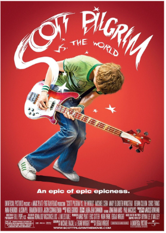

Scott Pilgrim é um jovem canadense de 23 anos, baixista de uma banda de garagem chamada Sex Bob-omb, que se apaixona por Ramona Flowers. Para ficar com ela, Scott precisa derrotar a Liga dos Sete Ex-Namorados do Mal de Ramona, que querem destruir sua vida em batalhas inspiradas em videogames.
Saiba mais! Saiba mais em Wikipedia! Trailer Oficial